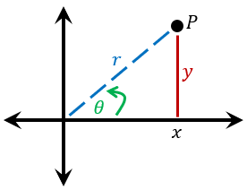
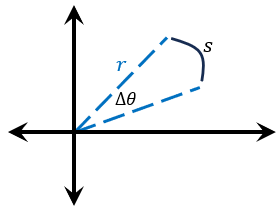
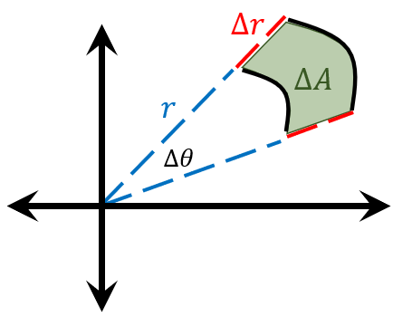

Lesson 34: Polar Coordinates
Changing the coordinate system can often make a difficult problem much simpler. For double integrals, this usually means switching from rectangular coordinates to polar coordinates. Polar coordinates describe a point in the plane by its distance from the origin and the angle it makes with the positive \(x\)-axis, making circular and radial regions much easier to work with.
Every point in the plane can be located using two pieces of information, which is why the plane is two-dimensional. In rectangular coordinates these are \(x\) and \(y\), and a point is written \(P = (x, y)\). In polar coordinates, we describe the same point using a different pair of quantities:
- \(r\), the distance from the origin to the point, and
- \(\theta\), the angle formed with the positive \(x\)-axis.
So the point is written \(P = (r, \theta)\).

From right-triangle trigonometry, we can relate the two coordinate systems.
Converting Between Coordinates
An Example
Find the polar coordinates \((r, \theta)\) of the point with rectangular coordinates \((-1, 1)\).
Since \(\tan\theta = \frac{1}{-1} = -1\) and the point is in the second quadrant, \(\theta = \frac{3\pi}{4}\).
The polar coordinates are \(\left(\sqrt{2},\ \frac{3\pi}{4}\right)\).
An Example
Prove the graph of the polar equation below is a circle of radius \(2\) centered at \((0, 2)\).
Multiply both sides by \(r\), and then convert to rectangular coordinates.
Complete the square in \(y\) by adding \(4\) to both sides.
This is the equation of a circle of radius \(2\) centered at \((0, 2)\).
For a section of a circle, the arc length, radius, and angle are related by the formula below.

The area differential has the following forms in rectangular and polar coordinates.
Area Differential

A small polar “rectangle” lies between the radii \(r\) and \(r + \Delta r\) and between two rays separated by the angle \(\Delta\theta\), as in the figure. One side has length \(\Delta r\). The other side is an arc, whose length is \(s = r\,\Delta\theta\).
For small changes, the region is nearly a rectangle, so its area is approximately the product of its sides.
In the limit, this becomes \(dA = r\,dr\,d\theta\). The extra factor of \(r\) appears because regions farther from the origin are wider.